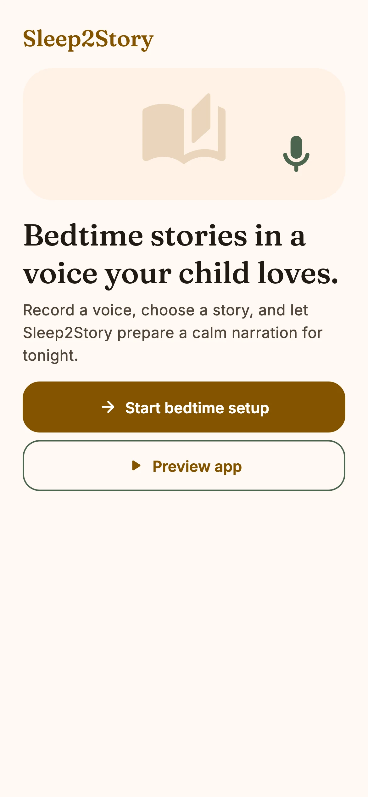
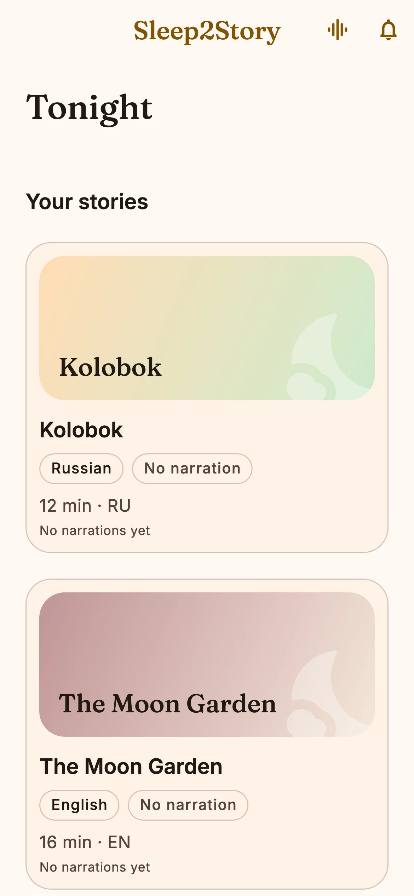
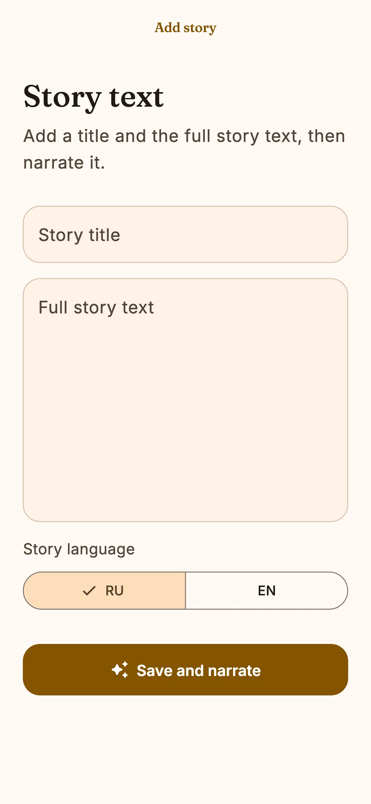

Семейные аудиосказки · RU / EN
Сказка
звучит
как дома.
Запишите голос близкого человека, добавьте полный текст истории и слушайте её в Sleep2Story.
Показать три шага ↓

Скоро
iOS + Android
Три действия. Никакой студии.
Вечерний эфир
вашей семьи
-
01
Голос
Прочитайте короткий текст, прослушайте образец и подтвердите согласие.
-
02
Сказка
Добавьте название и полный текст любимой истории.
-
03
Плеер
Слушайте, читайте, перематывайте и продолжайте с сохранённого места.
Настоящий интерфейс
Внутри всё
по-взрослому.
Не рисуем выдуманное приложение: показываем текущие экраны Sleep2Story и честно называем доступные функции.

Без выдуманных рейтингов
Вот что уже умеет приложение:
Перед сном спрашивают
Сказку нужно писать самому?
Вы добавляете полный текст — свой или тот, которым имеете право пользоваться.
Когда появится в магазинах?
Приложение ещё готовится для iOS и Android; активных ссылок на магазины пока нет.
Можно слушать и читать одновременно?
Да. В плеере доступен текст истории и управление воспроизведением.
Sleep2Story